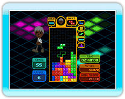

Jouez avec les règles de base de Tetris. Empilez les tétrominos les uns après les autres et faites-les disparaître. Si les tétrominos s'empilent jusqu'en haut de l'écran,
vous êtes GAME OVER. Si Infini est sur NON,
obtenez le meilleur score en complétant 150 lignes le plus rapidement possible. Si Infini est sur OUI, améliorez votre score jusqu'à ce que vous soyez GAME OVER.

Jouez avec les règles de
base de bataille Tetris. Effacez les lignes en jouant contre l'ordinateur. Le premier qui rendra son adversaire
incapable de jouer (GAME OVER) remporte la partie. Le nombre de lignes effacées détermine le nombre de blocs de pénalité envoyés dans le champ de l'adversaire. Il y a 15 niveaux de difficultés pour l'ordinateur et chaque résultat de match est enregistré dans les records personnels suivant le niveau de difficulté.

Obtenez le meilleur score en aidant le "grimpeur" à
franchir l'"arrivée" située en
haut du champ. Le grimpeur
monte automatiquement d'1
bloc. Guidez le grimpeur en formant des marches à l'aide des tétrominos. Faites attention de bien passer par tous les drapeaux "checkpoint" sur le chemin. Le score est comptabilisé à partir du temps total pris pour compléter les 10 niveaux. À chaque fois que vous
passez un checkpoint, vous obtenez un "Effacement".

Placez les tétrominos pour remplir les ombres dans le champ et créer les formes désignées. Quelque soit le
pourcentage de complétion, vous n'avez qu'à remplir les ombres pour compléter le niveau. Obtenez le meilleur score en faisant le meilleur temps et le meilleur pourcentage de complétion aux 30 niveaux. Vous avez 3 minutes pour compléter chaque niveau.

Dans un écran défilant, guidez un tétromino dans
sa chute à travers un champ
pour atteindre l'arrivée 400 lignes plus bas. Vous êtes GAME OVER si votre
tétromino est pris dans un bloc de pénalité ou si vous sortez de l'écran. Obtenez le meilleur score en atteignant rapidement l'arrivée.